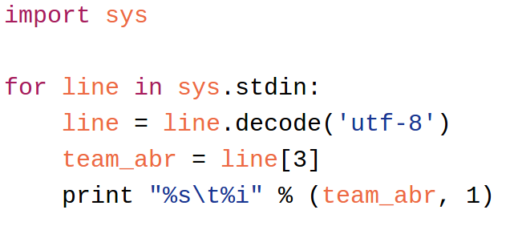

class: center, middle # Defensive Player Classification in Basketball ### Authors: Neil Seward --- # Contents 1. Evaluating Players 2. Contributions of Paper 3. HiveQL 4. HDFS 5. System Architecture 6. Demo 7. Conclusions --- # Gaussian Mixture Models ??? --- # Expectation Maximization ??? --- # Dirichlet Process ??? --- # Clustering Methods ### Custom Map  --- # References [1] http://www.slideshare.net/recruitcojp/internal-hive